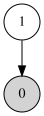
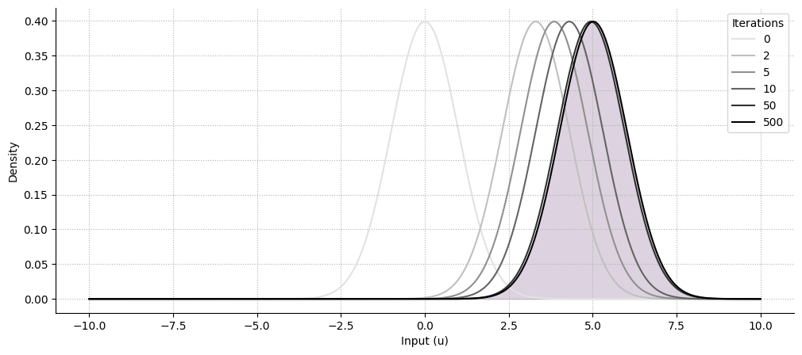
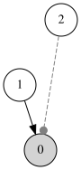
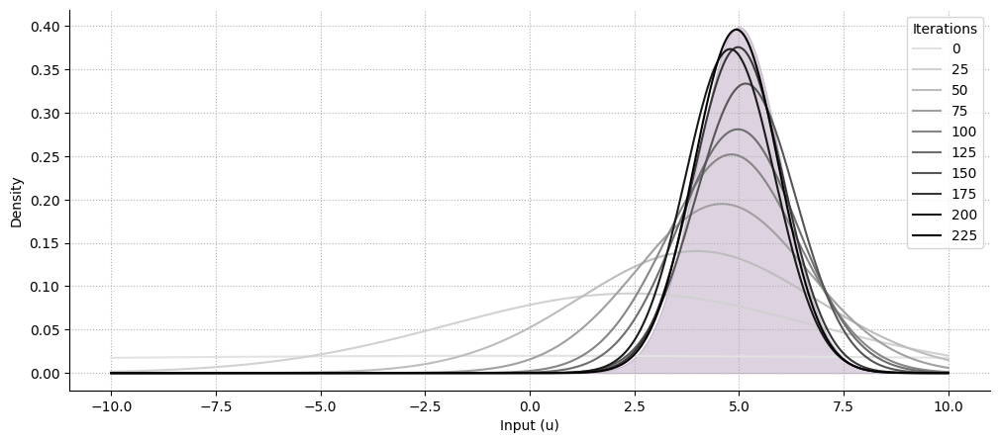

Example 2: Estimating the mean and precision of a time-varying Gaussian distributions#

import matplotlib.pyplot as plt
import numpy as np
import seaborn as sns
from scipy.stats import norm
from pyhgf.model import Network
Where the standard continuous HGF assumes a known precision in the input node (usually set to something high), this assumption can be relaxed and the filter can also try to estimate this quantity from the data. In this notebook, we demonstrate how we can infer the value of the mean, of the precision, or both value at the same time, using the appropriate value and volatility coupling parents.
Unkown mean, known precision#
Hint
The The continuous Hierarchical Gaussian Filter is an example of a model assuming a continuous input with known precision and unknown mean. It is further assumed that the mean is changing overtime, and we want the model to track this rate of change by adding a volatility node on the top of the value parent (two-level continuous HGF), and event track the rate of change of this rate of change by adding another volatility parent (three-level continuous HGF).
np.random.seed(123)
dist_mean, dist_std = 5, 1
input_data = np.random.normal(loc=dist_mean, scale=dist_std, size=1000)
mean_hgf = (
Network()
.add_nodes(precision=1.0, autoconnection_strength=0)
.add_nodes(value_children=0, tonic_volatility=-8.0)
.input_data(input_data)
)
mean_hgf.plot_network()

Note
We are setting the tonic volatility to something low for visualization purposes, but changing this value can make the model learn in fewer iterations.

Kown mean, unknown precision#
Unkown mean, unknown precision#
np.random.seed(123)
dist_mean, dist_std = 5, 1
input_data = np.random.normal(loc=dist_mean, scale=dist_std, size=1000)
mean_precision_hgf = (
Network()
.add_nodes(precision=1e4)
.add_nodes(value_children=0, tonic_volatility=-6.0)
.add_nodes(volatility_children=0, mean=6.0, tonic_volatility=-8.0)
).input_data(input_data)
mean_precision_hgf.plot_network()


System configuration#
%load_ext watermark
%watermark -n -u -v -iv -w -p pyhgf,jax,jaxlib
Last updated: Sat, 09 May 2026
Python implementation: CPython
Python version : 3.12.3
IPython version : 9.13.0
pyhgf : 0.2.11
jax : 0.4.31
jaxlib: 0.4.31
IPython : 9.13.0
matplotlib: 3.10.9
numpy : 2.4.4
pyhgf : 0.2.11
seaborn : 0.13.2
Watermark: 2.6.0